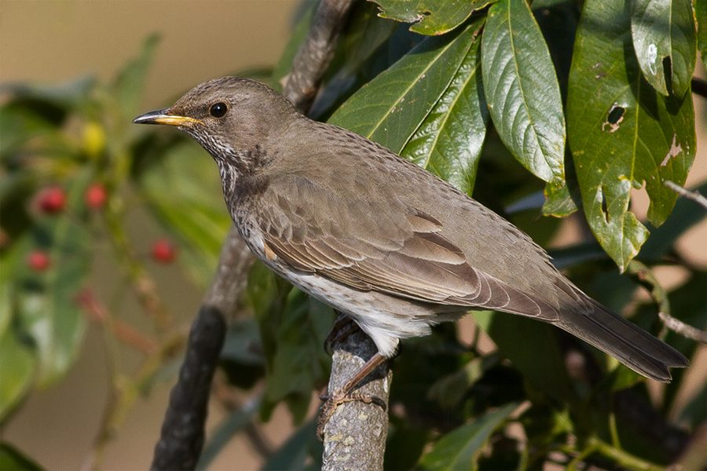

ब्लैक-थ्रोटेड थ्रशBlack-throated Thrush
Turdus atrogularis · Turdidae · BRD-0308

- Scientific name वैज्ञानिक नाम
- Turdus atrogularis Jarocki, 1819
- Family कुल
- Turdidae
- Hindi हिंदी
- ब्लैक-थ्रोटेड थ्रश
- Local names स्थानीय नाम
- black-throated thrush
- Status here यहाँ की स्थिति
- native
- Movement आवागमन
- Winter visitor
- Known from कहाँ दर्ज
- Others have published records from the Basti–Ayodhya districts बस्ती–अयोध्या के ज़िलों से दूसरों के प्रकाशित अभिलेख
- IUCN IUCN
- LC
- Review समीक्षा
- not yet reviewed
When to look कब देखें
Winter visitor शीतकालीन प्रवासी. Expected mainly in November, December, January, February, March. मुख्यतः नवंबर, दिसंबर, जनवरी, फ़रवरी, मार्च में अपेक्षित।
Breeds across the boreal taiga and coniferous montane forests of Siberia and western Central Asia; winters across northern India, the Himalayan foothills, and the Gangetic plains from November through March. All migrants and visitors →
Tell it apart from इनसे अलग पहचानें
ब्लैक-थ्रोटेड थ्रश / Black-throated Thrush
Turdus atrogularis Jarocki, 1819 — Turdidae
ब्लैक-थ्रोटेड थ्रश — साइबेरिया के बर्फीले टैगा जंगलों से जाड़ों में गंगा के मैदानी इलाकों में आने वाला एक मजबूत और सुंदर कस्तूरी पक्षी है। यह नवंबर से मार्च के दौरान पुराने बागों, बेर की झाड़ियों, नहर की पटरियों और घने पेड़ों के नीचे नम पत्तों के बीच कीड़े और गिरे हुए फल तलाशते हुए दिखाई देता है। नर पक्षी के चेहरे, गले और सीने पर एक चमकदार काला 'बिब' (पहनावा) होता है, जबकि मादा के सीने पर काली धारियां होती हैं। यह जंगली बेरों और बीजों को खाकर पौधों के फैलाव में मदद करता है।
Quick Identification त्वरित पहचान
| Feature | Description |
|---|---|
| Habit | Robust, medium-sized thrush foraging on ground and in fruiting trees |
| Male Plumage | Solid jet-black face, throat, and upper breast; grey-brown above, white below |
| Female Plumage | Buffy-white throat and breast heavily streaked and spotted with blackish |
| Bill | Sturdy, dusky-black with dull yellow base to lower mandible |
| Underparts | Clean whitish belly and vent; pale grey-brown wash on flanks |
| Tail | Moderate length, square-ended, plain dark grey-brown |
| Foraging | Energetic leaf-tossing on forest floor; hops with upright alert posture |
Field tip: Look in wild jujube (Ziziphus) scrub and under fruiting trees in winter. The adult male's solid black throat and chest bib contrasting with a white belly, or the female's streaked gorget and thrush-like bounding hop on leaf litter, identify this winter visitor.
हिंदी:
वयस्क नर का पूरा गला और सीना गहरे काले रंग का होता है, जबकि पीठ सलेटी-भूरी और पेट सफेद होता है।
मादा के गले पर काले धब्बे और धारियां होती हैं।
यह जमीन पर सूखी पत्तियां उलट-पुलटकर कीड़े खोजता है और खतरा भांपते ही पेड़ की ऊंची डाल पर बैठ जाता है।
Morphology आकारिकी
Measurements as given by Baker (1924 as Turdus atrogularis):
| Measurement | Range |
|---|---|
| Wing | 130–140 mm (Baker 1924) |
The Black-throated Thrush is a medium-large thrush with a strong build and long wings. In adult males, the forehead, lores, ear-coverts, chin, throat, and upper breast form a continuous, solid jet-black bib. The upperparts from crown to upper tail-coverts are plain dull brownish-grey. The lower breast, belly, and undertail coverts are clean white, while the flanks and underwing coverts are suffused with pale grey and buff.
In females, the upperparts resemble those of the male, but the black bib is replaced by a pale buffish-white throat bordered by dark moustachial and malar stripes, with the breast densely marked with brownish-black spots and streaks.
The bill is horn-black with a dull yellowish base on the lower mandible. The iris is dark brown. The legs and feet are greyish-brown or dark flesh-horn.
Vocalisations. The flight note is a thin, high-pitched seep or sriii, often given when flushed into tree cover. Feeding individuals utter a dry, clicking tuck-tuck alarm call. The melodious song is delivered only on Arctic breeding grounds.
हिंदी:
इसके पंख 130 से 140 मिमी लंबे होते हैं।
नर के गले पर काला धब्बा बहुत स्पष्ट होता है, जबकि मादा के सीने पर भूरे-काले छींटे होते हैं।
उड़ते समय यह पतली सीटी जैसी 'सीप' आवाज निकालता है।
Behaviour & Ecology व्यवहार और पारिस्थितिकी
Turdus atrogularis is an omnivorous ground and arboreal feeder. In its winter quarters across northern India, it occurs singly, in pairs, or in loose feeding associations around concentrated food sources such as heavily fruiting fig trees or ripening berry patches. It frequently associates with resident thrushes, babblers, and starlings.
On the ground, it moves in typical thrush fashion: running or hopping briskly with an upright posture, stopping abruptly to cock its head and locate hidden invertebrates, and vigorously flicking aside dry leaves with its bill. When disturbed, it flies up rapidly into the mid-canopy with an undulating flight, perching silently while facing away from the observer.
हिंदी:
यह जमीन पर तेज फुदक-फुदककर चलता है और सिर घुमाकर शिकार की आहट लेता है।
यह अक्सर मैना और बबूल के अन्य पक्षियों के साथ पके फलों वाले पेड़ों पर इकट्ठा होता है।
Life Cycle / Phenology जीवन चक्र
Baker (1924, p. 138–139) records that Turdus atrogularis breeds in May in Central Asia and parts of the northern ranges, and in June on the Yenisei, nesting on small trees. In winter it wanders south in large numbers across the plains of northern India, visiting the United Provinces before departing in spring.
हिंदी:
बेकर (1924) के अनुसार यह मई और जून में मध्य एशिया और उत्तरी क्षेत्रों में छोटे पेड़ों पर घोंसला बनाकर अंडे देती है। सर्दियों में यह बड़ी संख्या में उत्तर भारत के मैदानी इलाकों में आती है और वसंत में वापस लौट जाती है।
Host Plants or Prey आहार
The species has a broad omnivorous winter diet, switching between invertebrates and wild fruits:
- Berries of Ziziphus mauritiana (ber) and Ziziphus nummularia (jharber)
- Ripe figs of Ficus benghalensis (banyan), Ficus religiosa (peepal), and Ficus racemosa (goolar)
- Berries of Lantana camara and Murraya paniculata
- Earthworms, snails, and beetle grubs extracted from moist leaf litter
- Ground beetles (Carabidae), caterpillars, and ants
It primarily forages on the ground under thickets and fruit-bearing trees.
हिंदी:
यह बेर, गूलर, पीपल और बरगद के पके फल खाता है।
इसके अलावा जमीन के केंचुए, घोंघे और कीड़े-मकोड़े भी इसके मुख्य भोजन हैं।
Predators / Natural Enemies शत्रु
Hawks, owls, and small carnivores take birds of this size. No source opened for this atlas names a specific predator of this species.
हिंदी:
बाज, उल्लू और छोटे मांसाहारी जानवर इस आकार के पक्षियों का शिकार करते हैं। इस एटलस के लिए देखे गए किसी स्रोत में इसके किसी विशिष्ट शिकारी का नाम दर्ज नहीं है।
Agricultural / Human Relevance कृषि प्रासंगिकता
The Black-throated Thrush feeds on ground invertebrates, earthworms, and wild berries (Baker 1924, p. 138). It is protected under the Wildlife (Protection) Act, 1972.
हिंदी:
ब्लैक-थ्रोटेड थ्रश जमीन के कीड़ों, केंचुओं और जंगली बेरों को खाता है (बेकर 1924)। यह वन्यजीव (संरक्षण) अधिनियम, 1972 के तहत संरक्षित है।
Expected Locally स्थानीय रूप से अपेक्षित
Not a field record. Written from published accounts for eastern Uttar Pradesh. No confirmed local sighting yet — if you have seen it, that is what the atlas needs.
अभी तक स्थानीय पुष्टि नहीं। यह विवरण प्रकाशित स्रोतों से है, किसी अवलोकन से नहीं।
Look in fruiting orchards, ber bushes, dense roadside groves, and damp shaded woodland margins during the winter months from November to March.
GBIF holds published records from these districts.
A first record would be a photograph of the bird with place and date, sent through the About page.
Distribution वितरण
Global range: Breeds in eastern European Russia, western and central Siberia, south to the Altai, Sayan, and northern Tien Shan mountains. Winters in the Middle East, Iran, Afghanistan, Pakistan, the Himalayas, and northern India.
Regional status: Regular winter visitor in moderate numbers across Uttar Pradesh, favoring agroforestry orchards, scrublands, and riverine woodlands.
हिंदी:
यह रूस और साइबेरिया में प्रजनन करता है तथा ईरान, पाकिस्तान और उत्तर भारत में सर्दियां बिताता है।
Research Questions शोध प्रश्न
- Which native fruiting trees provide the most critical caloric intake for Turdus atrogularis during peak cold wave periods in eastern UP? / जाड़ों की शीतलहर के दौरान यह पक्षी मुख्य रूप से किन जंगली फलों पर निर्भर रहता है?
- How does the ongoing removal of Ziziphus scrub in agricultural field boundaries affect local thrush abundance? / खेतों की मेड़ों से बेर की झाड़ियां हटाने से इस कस्तूरी पक्षी पर क्या असर पड़ता है?
- What is the frequency of territorial aggression between wintering Black-throated Thrushes and resident thrushes at fruiting Ficus trees?
- What proportion of wintering individuals in the Awadh plain are adult males compared to females and immatures?
- Can community birdwatchers use fruit-tray feeding stations or ground photography to monitor annual winter arrival and departure dates? (A photo with date submitted by a village observer can establish phenological shifts.)
Similar Species मिलती-जुलती प्रजातियाँ
| Species | How to tell apart | हिंदी | |
|---|---|---|---|
| [[tickells_thrush\ | Tickell's Thrush]] (Turdus unicolor) | Lacks black throat bib; uniform slaty-grey upperparts with pale greyish breast and yellowish bill | टिकेल का कस्तूरी पक्षी |
| [[orange_headed_thrush\ | Orange-headed Thrush]] (Geokichla citrina) | Entire head, neck, and underparts bright warm orange-chestnut; slaty-blue wings and back | नारंगी-सिर कस्तूरी पक्षी |
Field rule: The adult male's jet-black throat bib, or the female's heavily spotted gorget and grey-brown upperparts, distinguish the Black-throated Thrush from all other regional thrushes.
हिंदी:
टिकेल थ्रश का शरीर एकसमान सलेटी होता है और उसमें काला गला नहीं होता; नारंगी-सिर थ्रश का पूरा सिर और छाती चमकदार नारंगी होती है।
Taxonomy & Classification वर्गीकरण
Original description. Described by Feliks Paweł Jarocki in 1819 in Spis Ptaków w Gabinecie Zoologicznym Królewsko Warszawskiego Uniwersytetu Znayduiących Się (p. 14). The type locality is the Caucasus.
Subspecies. Monotypic; treated as monotypic following its split from Turdus ruficollis.
Taxonomic history. Long treated as a subspecies of the Red-throated Thrush (Turdus ruficollis), modern taxonomic authorities recognize Turdus atrogularis as a distinct species based on consistent plumage differentiation and genetic divergence.
Family and order placement. Order Passeriformes; family Turdidae (thrushes).
IUCN status rationale. Evaluated as Least Concern (LC) by the IUCN Red List, reflecting a vast breeding breeding distribution across Siberia and a large, stable global population.
हिंदी:
जारोस्की ने 1819 में इसका वैज्ञानिक विवरण दिया था। यह टर्डिडे कुल की प्रजाति है और वैश्विक स्तर पर सुरक्षित है।
Photo Gallery फोटो गैलरी
No photos yet — add field photos to media/species/black_throated_thrush/ and run node scripts/sync_photos.js.
Photos needed आवश्यक फोटो
- [ ] Adult male showing solid black throat bib (काले गले वाला वयस्क नर)
- [ ] Female foraging on forest leaf litter (जमीन पर पत्तों के बीच मादा)
References संदर्भ
- Jarocki, F. P. (1819). Spis Ptaków w Gabinecie Zoologicznym Królewsko Warszawskiego Uniwersytetu Znayduiących Się. Nakładem i Drukiem Zawadzkiego i Węckiego, Warszawa, p. 14.
- Baker, E. C. S. (1924). The Fauna of British India, Including Ceylon and Burma. Birds. Vol. 2. Taylor & Francis, London, p. 138 (as Turdus atrogularis).
- Ali, S. & Ripley, S. D. (1987). Compact Handbook of the Birds of India and Pakistan. Oxford University Press, New Delhi.
- Grimmett, R., Inskipp, C. & Inskipp, T. (2011). Birds of the Indian Subcontinent. 2nd ed. Christopher Helm, London.
- BirdLife International (2024). Turdus atrogularis. The IUCN Red List of Threatened Species 2024: e.T22736108A264434220.
- GBIF Occurrence Data — Turdus atrogularis Jarocki, 1819, India (2025).
Source file: species/fauna/birds/black_throated_thrush.md